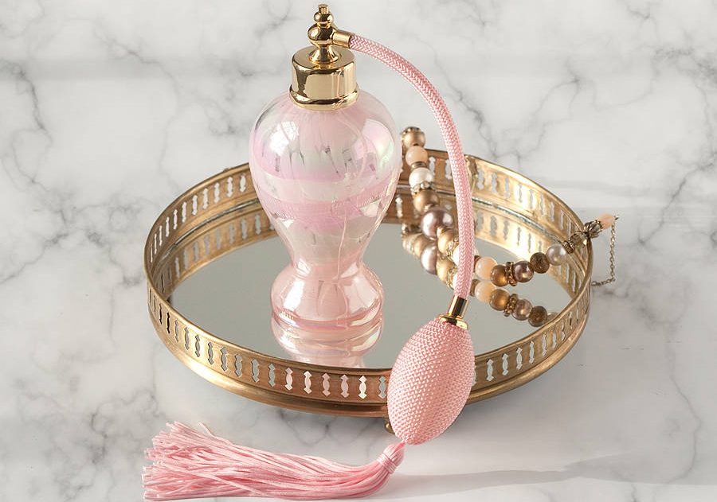
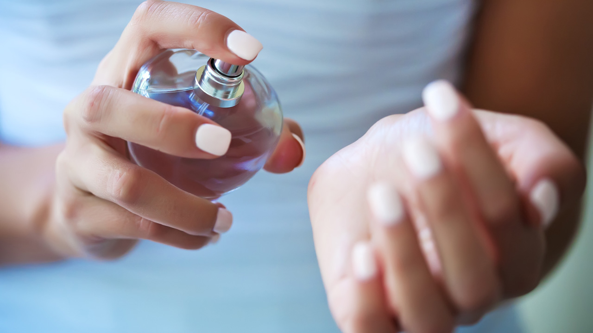

Cred că prima regulă este să vedeţi preţul. Dacă în comparaţie cu ce găsiţi într-o parfumerie consacrată preţul este mult mai mic, atunci cel mai probabil parfumul este contrafăcut. Pentru magazinele online de parfumuri este normal să găsiţi preţuri un pic mai mici, pentru că acestea nu plătesc chiria magazinului ori angajate pentru supraveghere şi vânzare.
Ambalajul spune multe despre parfum. Celofanul ambalajului unui parfum original este subţire, fin, fără încreţituri, fără urme de lipici şi se potriveşte perfect pentru cutia din carton. Dacă este un ambalaj rudimentar, cel mai probabil aveţi de a face cu un produs contrafăcut.
Flaconul în care se găseşte parfumul original este făcut din sticlă de calitate, cu trăsături fine, mici protuberanţe, înscrisuri încrustate pe sticlă etc. Flaconul unui parfum contrafăcut este de multe ori unul rudimentar, ieftin, creat pentru a fi, nu pentru a încânta.
Verificati mereu daca codul de pe flacon este acelasi cu cel de pe sticla!Există un cod al produsului inscripţionat atât pe cutie, cât şi pe flacon. Verificaţi-i existenţa şi dacă cele două coduri se potrivesc. Existenţa lor nu garantează însă veritabilitatea parfumului. Aceste element de verificare trebuie consolidat cu celelalte măsuri descrise mai sus şi cu cele de mai jos.
Un parfum original are o persistenţă net superioară celui contrafăcut, durând până la 24 de ore. Parfumul contrafăcut se "stinge" după o oră-două. Un alt indiciu care vă poate ajuta să discriminaţi între un parfum original şi unul contrafăcut este limpezimea lichidului. Dacă în flacon sunt prezente impurităţi, în mod cert aveţi de a face cu un produs contrafăcut.
Un alt indiciu, cel mai relevant în condiţiile în care cunoaşteţi parfumul, este mirosul. Parfumurile contrafăcute au o mireasmă mai înţepătoare şi le lipsesc cele trei stadii. Folosesc alcool de slabă calitate şi din acest motiv este alterat mirosul produsului. Dacă nu cunoaşteţi parfumul, dar după ce l-aţi cumpărat vreţi să vă asiguraţi că este original, puteţi trece pe la parfumerie şi verifica mirosului original.
Dacă doriţi să cumpăraţi online, la primire vă sugerăm să desfaceţi cutia şi să efectuaţi o verificare preliminară chiar atunci, în prezenţa curierului. Dacă nu are legătură firma de la care aţi cumpărat, probabil nu-l va interesa acţiunea dv, dar dacă da, îl puteţi spune că nu doriţi să cumpăraţi un produs contrafăcut.